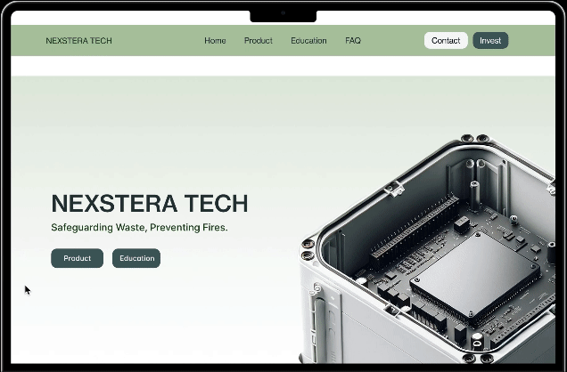

Solution
Introducing Nexstera Tech's
new website.
The final design isn't just a prettier website; it's a fundamentally different communication strategy. Each page now has a single job: the homepage builds emotional urgency around the battery fire problem, the investor page converts interest into meetings, and the education hub positions Nexstera as a thought leader. Every design decision traces back to what I heard in research.
Homepage: clean hero, clear value proposition, and streamlined navigation

Investor page: traction metrics, business value, and clear calls to action

Pyrotack features: accessible storytelling of AI-powered battery detection

Dedicated Investor Page
Clearly presents traction, Pyrotack's value, and business potential: designed specifically to support funding conversations and investor outreach.
Educational Content Hub
Simplifies technical concepts about lithium-ion battery risks and Pyrotack's AI detection: building public awareness and credibility.
Streamlined Product Storytelling
Translates Pyrotack's complex technical functionality into accessible, engaging narratives that any visitor can understand.
Modular, Scalable Design System
A cool green palette reflecting sustainability and innovation: ensuring visual consistency and long-term adaptability as Nexstera grows.
Clear Calls to Action
Intentional engagement pathways that drive user flow from initial awareness through inquiry and conversion for both investors and the public.